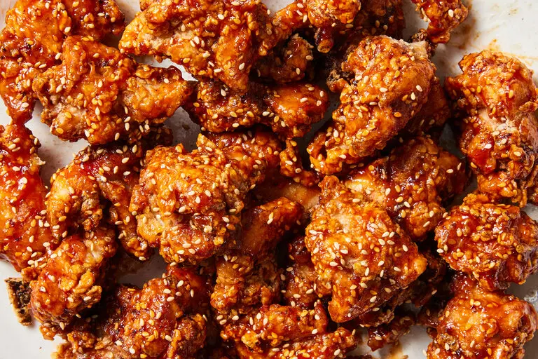

Korean Fried Chicken
Recipe by Julia Moskin

Description
Yangnyeom dak, or Korean fried chicken, known for its crunchy exterior and spicy-sweet glaze, became popular in South Korea when fast-food places opened there after the war. Along with budae jjigae, tteokbokki and corn cheese, it’s part of a category of food known as “anju,” or dishes typically eaten with alcohol, but it's a crispy, sticky delight no matter what you're drinking. This five-star version, which was adapted from “Quick & Easy Korean Cooking” by Cecilia Hae-Jin Lee (Chronicle, 2009), can be made with boneless chicken thighs or bone-in wings. —Julia Moskin
Ingredients
- 1 small yellow onion, coarsely grated
- 2 cloves garlic, minced
- ½ teaspoon kosher salt, plus more for coating
- ¼ teaspoon black pepper, plus more for coating
- 8 to 10 boneless, skinless chicken thighs, quartered, or 24 wings
- 3 tablespoons gochujang paste
- 3 tablespoons ketchup
- ¼ cup granulated sugar
- 2 tablespoons toasted sesame seeds, more for garnish
- Juice of ½ lemon
- Oil for deep frying
- ½ cup all-purpose flour
- ⅔ cup cornstarch
Steps
- In a medium-size bowl, combine grated onion, garlic, salt and pepper. Add chicken and toss to coat well. Cover and set aside to marinate for about 1 hour.
- In a large bowl, stir together chili paste, ketchup, sugar, sesame seeds and lemon juice. Taste and adjust flavors to get a spicy-sweet-tangy finish. Set aside.
- Pour oil into a large heavy pot to a depth of 1½ inches. Heat to 350 degrees. Combine flour and cornstarch in a shallow bowl and season with salt and pepper.
- Working in batches to avoid crowding, lift chicken from marinade, dredge lightly in seasoned flour and cornstarch, gently drop into oil and fry for 5 to 7 minutes, turning occasionally, until golden brown and crisp. Drain on paper towels. Repeat with remaining chicken, checking oil temperature between batches.
- For wings only, when all pieces are done, increase oil temperature to 375 degrees and refry in batches for 30 to 60 seconds, until very crisp. Drain once more on paper towels. While chicken is still hot, brush all pieces thickly with chili sauce. Serve hot, sprinkled with sesame seeds.